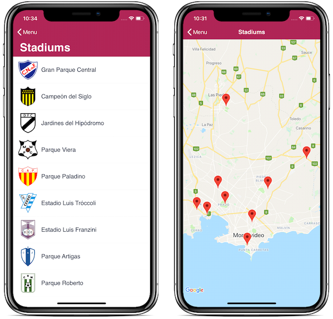
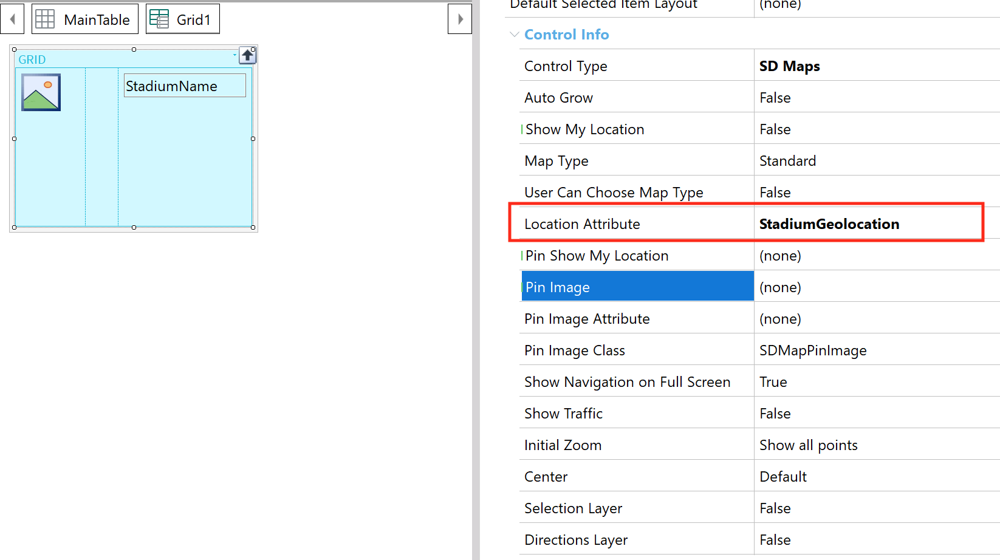
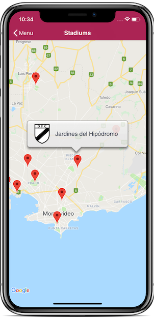

The Maps Control Type is offered for the Grid control to provide an elegant way for the display of locations using a map and interacting with them.
So, when you list data in a Grid control that contains a "location" field, it may be displayed as a map by setting the grid Control Type property to Maps.
A "location" is an attribute or variable based on the Geography data type (or its derived data type GeoPoint). Geolocation domain can also be used to define locations, but its use will be discontinued (Geography will replace it).
For example, if you have defined a Stadium Transaction, you can list the stadiums values in a regular Grid control, or you could also display them on a map by setting the grid Control Type property to Maps. After that, you will see the Location Attribute property associated with the grid to enter the attribute containing the stadium location information.

To enable the device to display a map, you must get the API keys for the map providers you will be using in your application.
Go to the grid you want to use as a map, and once there proceed to configure the grid Control Type property with value Maps. Then, set in the Location Attribute property (or Location Field Specifier property if the grid is linked to an SDT), with the attribute/variable/field that contains the location data.

There is no need for this location attribute/variable/field to be displayed in the Grid layout. What is configured in the grid layout will be displayed upon tapping each point on the map.

There are several properties controlling the behavior of the Maps control.
| Show My Location |
If this property is True, then the current device position will be displayed on the map. |
| Map Type |
Indicates the type of map that will be used in the control.
- Standard: shows streets.
- Satellite: shows satellite images of the Earth.
- Hybrid: shows streets over the satellite images.
|
| User Can Choose Map Type |
If this property is True, then there will be a button on the screen, allowing the user to choose the map type in runtime. |
| Location Attribute |
Required. Specifies which attribute or variable will be used to load the point on the map. If the Grid control is linked to an SDT, the Location Field Specifier property must be used. |
| Pin Show My Location |
Specifies which Image object will be used to display the device's current position. If this property is not set, then the pin image is taken from the Pin Image property (if set) or the default pin for the platform is used. |
| Pin Image |
Specifies which Image object will be used as the pin image for all the pins appearing on the map.
If this property is not set (or the Pin Image Attribute property, see below), then the default pin image for the platform is used. |
| Pin Image Attribute |
If this property is set, then the value loaded in the indicated attribute/variable will be used to display each point on the map. This is useful when different pin images must be used for the various points on the map. If the Grid control is linked to an SDT, then the Pin Image Field Specifier property must be used. |
| Pin Image Class |
Theme class, used to display the pin images on the map. |
| Show Traffic |
If this property is True, then the traffic information will be displayed. The traffic information is only shown when the map provider provides that information for the specific region that is shown. |
| Initial Zoom |
Indicates how the map will be displayed at startup
- Show all points: (Default value) the map is adjusted to display all the loaded points (and the current device location if Show My Location is set to True).
- Nearest point visible: the map is adjusted to display the current device location and shows my location and the nearest point.
- Radius: the map is adjusted to display a fixed radius, from the specified center. The radius value is specified using the Initial Zoom Radius Attribute property (see below).
- No initial zoom: no specific action is taken regarding the initial zoom. The behavior will depend on the platform and provider used.
|
| Initial Zoom Radius Attribute |
It should be of the numeric type. Indicates the minimum distance (in meters) that should be visible around the designated center point. The map's zoom level will be adjusted so that at least this distance will be visible in all directions. If an SDT variable is used in this property, then the Initial Zoom Radius Field Specifier property has to be set. |
| Center |
Indicates the position where the map will be center at startup.
- Default: the map center is determined by the points loaded in it.
- My Location: the map is centered on the current device location.
- Custom: a specific location is used to center the map. This location is specified in the Custom Center Attribute property (see below).
|
| Custom Center Attribute |
It should be of the Geography data type (or based on Geolocation domain). It indicates the point that will be used as the map center. If an SDT variable is used in this property, then the Custom Center Field Specifier property has to be set. |
| Selection Layer |
Enables the possibility of navigating the map and selecting a location point using the map center in addition to executing an event. Check this document for detailed information. |
| Directions Layer |
Enables the possibility of drawing the route between two points on the map. Check this document for detailed information. |
| Editable Geographies |
It enables the Map in Edit mode and allows drawing a specific geometry(Point, Line, or Polygon) |
Note: The indexes correspond to the order in which the pins were loaded. The first pin loaded corresponds to index 1; the second pin entered corresponds to index 2, and so on.
Select
Puts in focus and selects an index that is drawn in the Map.
Return value: None
Parameters Index: Numeric
Deselect
Removes the focus from a selected index; an index must always be specified for the method to work. Even though the indicated index doesn't have to be the one currently selected, it is necessary to pass an index to the method for it to work correctly.
Return value: None
Parameters: Index: Numeric
SelectedIndex
Returns the currently selected index.
Return value Numeric
Parameters None
DrawGeography
Lets draw a geography
| Return value |
Varchar (Geography Id) |
| Parameters |
Geography, Theme class Name |
Save Edition
It launches the GeographySaved Event.
Clear
Clears the geographies drawn.
GeographySaved
Launched when a geometry finishes editing
MarkerDragStarted
MarkerDragEnd
SelectionChanged
It is triggered every time an index is selected or deselected on the map, both by code and manually by the application user.
- In Android devices, pin images are scaled to have the same size, regardless of the device screen resolution. Even when all pin image sizes are allowed, it is advisable to use images of 40x40 size. References on this topic may be found here, and here.
- As from GeneXus 16, the Show Navigation on Full Screen property is no longer supported
|